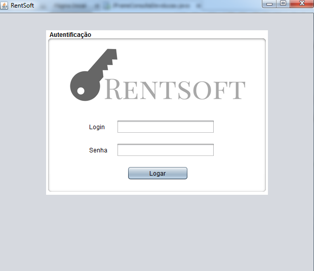

Introdução
Nesse manual, você usuário, terá a oportunidade de aperfeiçoar o seu conhecimento a cerca do uso do sistema Rentsoft. Ao término do mesmo, você está apto a acessar o sistema, desenvolver cadastros, consultas e relatórios do mesmo. Esse manual também serve como ferramenta de referência. Caso você precise tirar dúvidas pontuais sobre o sistema, clique em algum capítulo do indíce de navegação a sua escolha.
Login
Tendo aberto o sistema, verá que no centro aparecerá um painel em branco com o nome "Autenticação". Nesse painel, você fará acesso direto ao sistema pelo seu login e senha. No login e senha, coloque respectivamente nas caixas de texto que aparecem no painel e clique no botão a baixo, "Logar". Caso você não seja Admin, e ainda não tenha login e senha, fale com o administrador do sistema da sua empresa para obter a mesma.
Depois de efetuado o login, você estará de frente para o painel principal do sistema. É possível identificar uma barra de navegação, com os ícones: Logado, Cadastro, Consulta, Locação, Relatórios e Ajuda. Possível também identificar na parte superior direita, logo abaixo da barra de navegação, seu ícone de usário com uma menssagem calorosa de "Bem Vindo!". Na parte inferior do painel, também se encontra data e hora de sua localidade.

Logado
Clicando com o botão esquerdo do mouse em cima do ícone Logado, irá aparecer as opções "Deslogar" e "Sair". Escolhendo a opção com o botão esquerdo do mouse em "Deslogar", você voltará a página de login e clicando em "Sair", o sistema fechará. Verifique nas imagens a baixo.


Cadastro
Aqui, em Cadastro, é onde começa de fato o manuseio com o sistema. Nesse botão, algumas das funções mais importantes serão demonstradas para você. Clicando na mesma, você verá a aparecer as opções: Cadastrar Cliente, Cadastrar Veiculo, Cadastrar Categoria e Cadastrar Usuario.

Cadastar Cliente
Vamos fazer um tour primeiro, em cadastrar Cliente. Clicando no mesmo, abrirá uma tela com título "Dados Pessoais". Conseguimos ver no topo credenciais padrões para o cadastro do Cliente... Nome, CPF, RG, Data de Nascimento. Preencha esses espaços. No campo CPF e RG, não se preocupe com caracteres especiais, aqui você pode digitar apenas os números, sem problema. Quanto a data, coloque usando as barras nos espaçamentos "dia\mês\ano". Continuando, Coloque o email com todos os caracteres que ele comporta. Telefone, se atentando ao ddd e a quantidade correta de digitos. O mesmo para o Celular. Endereço e complemento livres, da forma correta que você achar. Cep, bairro e cidade, e UF da mesma forma (se atente ao caracter especial do cep, apenas). pronto, feito isso, o painel ficará completamente preenchido. Segue a baixo, uma imagem de exemplo...

Tendo feito isso, é hora de salvar esse Cliente. Logo abaixo, dois botões são visíveis, "Cancelar" e "Salvar"... Clicando em Cancelar, todos os campos de texto do painel serão apagados (o que teoricamente não queremos). Tente clicar em "Salvar". Após isso, uma menssagem de confirmação irá aparecer, perguntando se você quer confirmar, sim ou não. Clique em "sim", para confirmar, e depois em "Ok". Pronto, agora, o cliente está salvo. Veja a seguir, uma imagem exemplificando a situação.